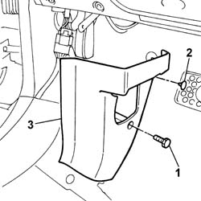

7040L42 sill plate connection of one front door (1), lh or rh - r r
- Path
- Procedures > 70 FITTINGS > 7040 BODYSHELL INTERIOR TRIMS AND FITTINGS > 7040L cabin floor covering > 7040L42 sill plate connection of one front door (1), lh or rh - r r
- Kind
- repair procedure (removal / refitting; the operation number is the code)
- Applies to
- all engines; all production periods
- Interactive page
- https://sloeber94.github.io/elrnDB-fPnd/en/#/2753219
Applies to: all engines; all production periods
 Removing
Removing
 Refitting
Refitting1. Undo retaining bolts
2. Undo the retaining stud.
3. Remove the running board connector.

Applies to: all engines; all production periods
Refitting
RemovingPosition the running board connector and tighten the fixing bolt.
Position the fixing button.
Topics that link to this page (41)
- 5010D17 mixed air upper sensor - r r
- 5020A10 heater box - r+r
- 5020A30 heater fan motor - r+r
- 5020A44 heater fan motor resistor - r+r
- 5020A50 heater radiator - r+r
- 5040B64 sensor on evaporator for a/c ecu - r + r
- 5040C10 air conditioner box - r+r
- 5040C26 evaporator unit condensate collection tank - r r
- 5040C30 fan motor - r+r
- 5040C50 air conditioner heater radiator - r+r
- 5040C64 a/c evaporator - r+r
- 5040D14 ecu with automatic air conditioner pushbuttons - r+r
- 5040D75 Air conditioning recirculation flap control MOTOR - R.R.
- 5505A90 rear wiring bundle - r r or replace
- 5505B10 front door wiring - r r
- 5505B11 front door wiring - r r
- 5505C26 bonnet wiring - r r
- 5505C34 intergrated instrument under facia front air bag wiring - r r
- 5570T20 radio aerial amplifier - r r
- 5580C50 (HEAD- BAG MODULE ) (one), left or right - R.R.
- 7005A24 front side door r r
- 7010A24 rear side door hinges - repair or replace with door removed
- 7015A24 tailgate hinges - repair or replace with tailgate removed
- 7025A24 boot lid opening lever - r+r
- 7025A28 bonnet lid opening cable - r r
- 7030B24 sliding roof blind,front or rear - r r
- 7030B47 GUIDE device for sliding roof movement control cables - R.R .
- 7030B50 sun roof guide , one , lh or rh - r r
- 7030B70 sun-roof control switch - r+r
- 7030B74 sun-roof wiring harness - r r or replace
- 7040A97 facia trim support beam - r r
- 7040A98 instrument facia trim support beam - r r with facia removed
- 7040H10 roof panel lining - r r
- 7040H16 roof panel lining - r r
- 7040H36 central trim lower element - r r
- 7040H38 central pillar upper element - r r
- 7040L10 cabin floor carpet - r r
- 7040L40 front compartment scuff strip - r r
- 7065A12 front seat belt (one), lh or rh, with pretensioner on wheel - r r
- 7205E36 Stripping FRONT SIDE DOOR
- 7210E36 R.R. FRONT SIDE DOOR